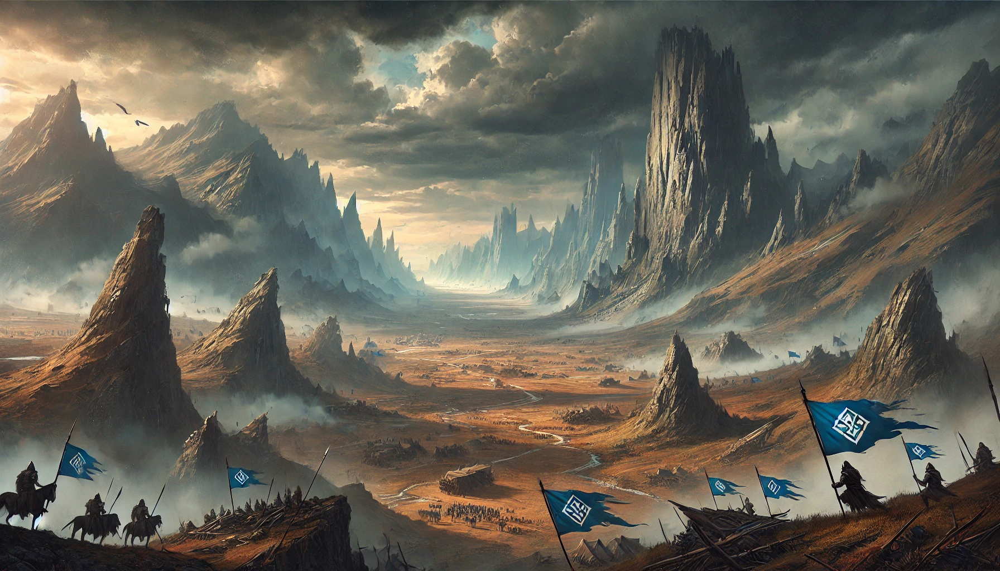

My Journey Through the Cosmere
Personal Story
My good friend Sam started reading the Mistborn stories around 2016. I had just finished high school and wasn’t very interested in books at the time—school had burnt me out, haha. But he told me the books were on Audible, which sounded much easier to handle, so I decided to give it a listen.
The experience began with a dark narrative that vividly described the brutal reality of slavery and the dehumanization of the skaa by the oppressive noblemen. I was both horrified and utterly intrigued by the raw, visceral detail of a world steeped in cruelty.
From that moment on, I became a devoted fan. The original Mistborn trilogy not only introduced me to a universe of morally ambiguous characters and broken souls, but it also revealed a glimmer of hope and introduced concepts of redemption that profoundly shifted my perspective. This transformative experience rekindled my love for reading and storytelling, igniting a passion to explore new narratives far beyond my initial expectations.
My Timeline of the Cosmere
I began my journey with the original Mistborn Trilogy. From the very first pages, I was drawn into Scadrial—a world where decay and stagnation reign. Under the unyielding rule of the Lord Ruler, an immortal tyrant who has held power for a thousand years, the empire isn’t collapsing but is instead mired in oppressive inertia.
Both the noblemen and the skaa are crushed under his iron-fisted control, and the world itself is slowly decaying—a constant reminder of lost glory and suppressed potential. Yet within this bleak landscape, the spark of rebellion and the promise of change create a tension that makes the saga so compelling.
Next, I read Arcanum Unbound, a collection of short stories that introduces several of the Cosmere worlds without revealing too many spoilers. For the best experience, I recommend exploring the core narratives—the original Mistborn Trilogy and the main Stormlight Archive books—before diving into these supplementary tales. This volume provided a tantalizing glimpse into the interconnected nature of the overall universe.
After that, I dove into The Stormlight Archive—a series where the world feels strikingly alien compared to our own. The highstorm, a relentless and awe-inspiring force, plays a monumental role in shaping every aspect of life on Roshar, adding both danger and majesty to its landscape.
I then revisited Elantris, Sanderson’s ambitious debut that initially challenged me, but eventually revealed its unique charm and deep roots in his storytelling.
Lastly, I explored Warbreaker, one of my all-time favorites. It's especially intriguing because Sanderson hasn't revisited it in his later works, lending it an enduring mystique and a special place in the Cosmere.
The Shattered Plains
